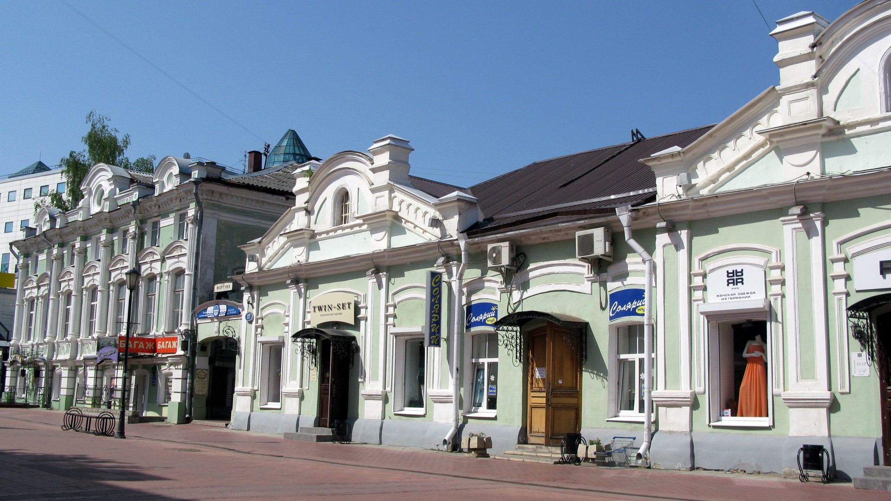
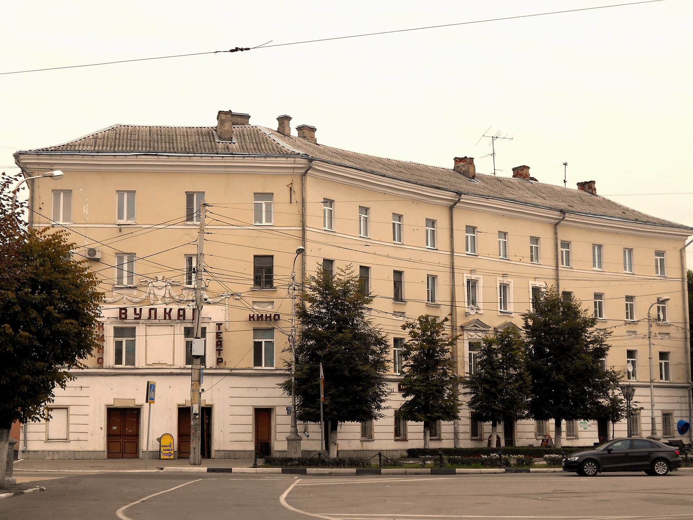
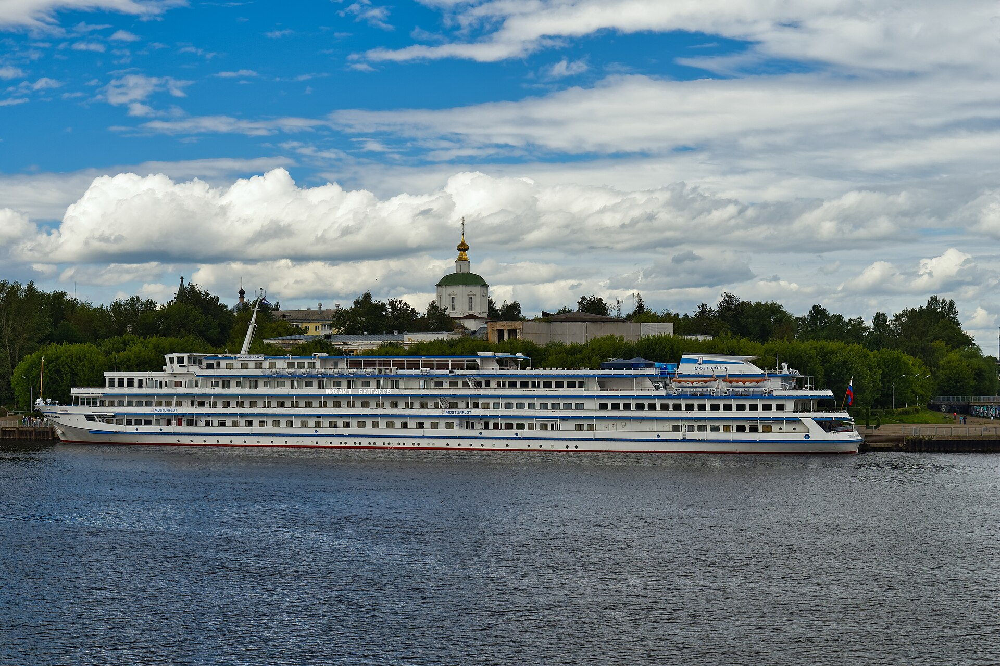

Юридическая помощь призывникам в Твери
Освобождение от призыва, отсрочки и военный билет — на законных основаниях. Специализация фирмы: военное право и клиническая медицина.
Работаем в Твери и Тверской области с 2010 года.
Чем помогаем
Освобождение от призыва
Разбираем медицинские документы, готовим заключения и добиваемся категории «В» на призывной комиссии.
Отсрочки по здоровью и учёбе
Оформляем законные основания отсрочки и защищаем их при обжаловании.
Военный билет после 27 лет
Получаем документ без лишних визитов и разбираем претензии военкомата.
Обжалование решений
Жалуемся в вышестоящую комиссию и суд; решение приостанавливается.
Защита прав военнослужащих
Консультируем действующих и запас: контракты, расчёты, споры с частью.
Прочие юридические услуги
Регистрация и ликвидация юрлиц и ИП, представительство в суде.
Как мы работаем
Призыв — процедура из одиннадцати этапов: поликлиника, военкомат, больница, две комиссии. Мы ведём дело с первого шага до результата.
Документы
Справки, выписки и акты собираем заранее — до повестки.
Освидетельствование
Медкомиссия видит ваши диагнозы, а не общий анамнез.
Результат
Категория годности и военный билет — либо решение суда.
Проверьте категорию годности
Выберите диагноз из Расписания болезней — страница покажет, что даёт статья по закону.
Ст. 52 Расписания болезней · Бронхиальная астма
Ограниченно годен: от призыва освобождают, зачисляют в запас и выдают военный билет.
Категорию присваивает только призывная комиссия по медицинским документам. Это справка по закону, а не диагноз.
О компании
Юридическая компания «Альтернатива» с 2010 года ведёт дела призывников, офицеров запаса и военнослужащих по всей Тверской области. Юристы фирмы читают и историю болезни, и Федеральный закон — потому что специализация одна: защита прав на каждом этапе призыва.
- Основана
- 2010
- Город
- Тверь
- Специализация
- военное право, клиническая медицина


Вопросы и ответы
Что даёт категория «В»?
Ограниченную годность: от призыва освобождают, зачисляют в запас и выдают военный билет. Категорию подтверждает призывная комиссия — иногда её приходится добиваться через вышестоящую комиссию или суд.
Можно ли оспорить решение комиссии?
Да. Жалоба подаётся в вышестоящую призывную комиссию или сразу в суд. До вынесения нового решения выполнение обжалованного решения приостанавливается.
Как получить военный билет после 27 лет?
После 27 лет вас уже не призывают, но военный билет обязаны выдать. На практике военкомат запрашивает объяснения пропуска призывов — в разговоре с ним лучше приходить с юристом.
Чем грозит неявка по повестке?
Административной ответственностью по ст. 21.5 КоАП. Систематическое уклонение от призыва — уже уголовная ст. 328 УК РФ. Если явиться не можете, сообщите об этом письменно.
Контакты
Приходите на консультацию с приписным свидетельством и медицинскими документами — разберём ваш случай в первый же визит.
Записаться на консультацию

- Адрес
- Тверь, ул. Вольного Новгорода, 21, этаж 2, офис 25
- Телефон
- (4822) 57-50-07
- Почта
- info@altpriziv.ru
- Telegram
- @altpriziv